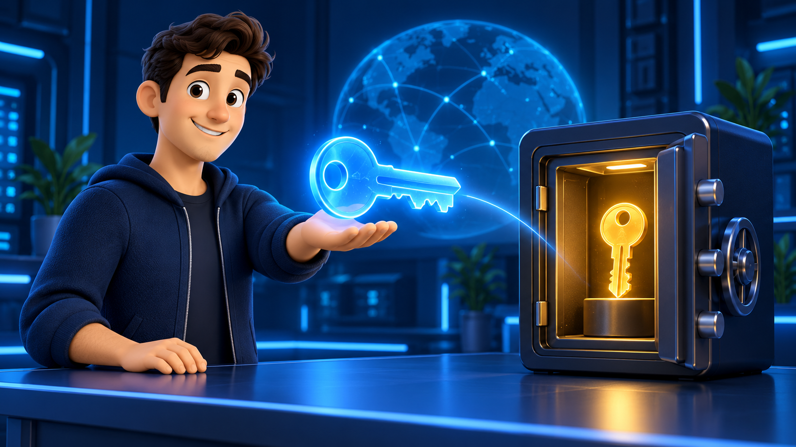
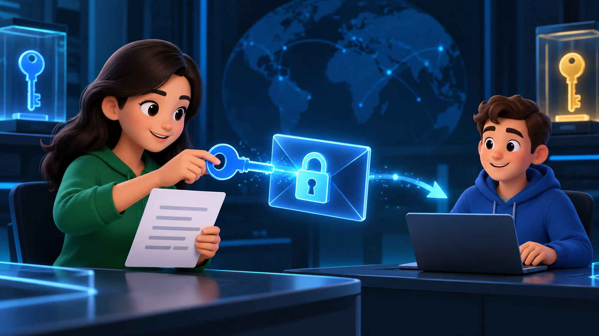
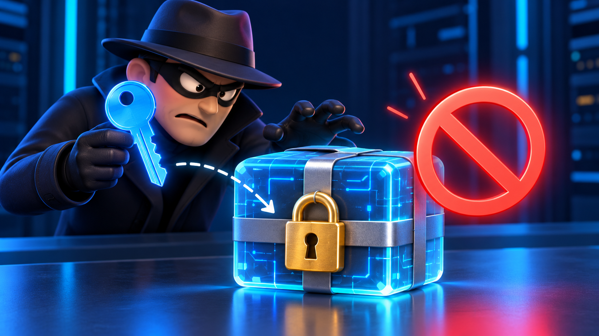
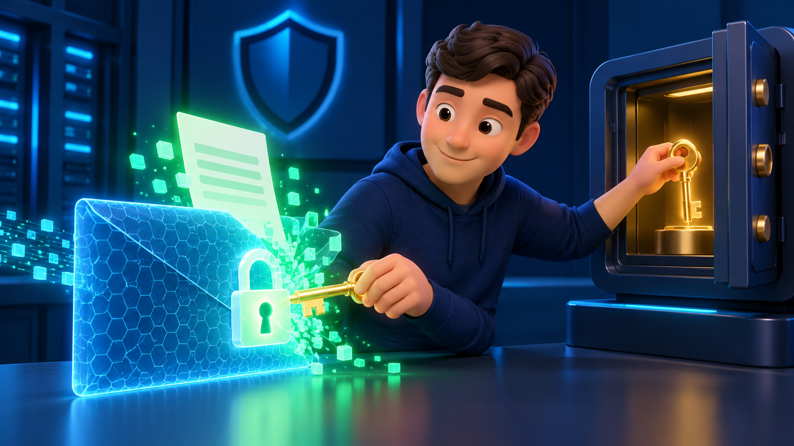
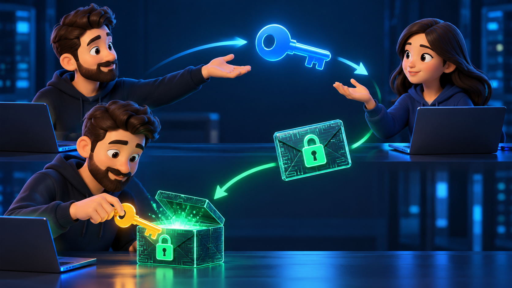

Criptografia Assimétrica (RSA-2048)

Na criptografia assimétrica, cada pessoa tem duas chaves ligadas matematicamente: a chave pública, que pode ser divulgada para todos, e a chave privada, que fica guardada só com o dono. O que uma cifra, só a outra decifra.

Bob divulgou a chave pública dele. Alice não precisa combinar nenhum segredo antes: ela usa a chave pública do Bob para cifrar a mensagem.
0 de 190 bytes

Um espião interceptou a mensagem cifrada. Ele também tem a chave pública do Bob, porque ela é pública. Será que ele consegue decifrar?

Só o Bob tem a chave privada, a única capaz de decifrar o que foi cifrado com a chave pública dele.

- Alice cifrou com a chave pública e Bob decifrou com a chave privada: chaves diferentes, por isso é criptografia assimétrica.
- Alice e Bob não precisaram combinar nenhum segredo antes. Isso resolve o problema da distribuição de chaves da criptografia simétrica.
- O espião tinha a chave pública e mesmo assim não conseguiu decifrar.
- Limitação: o RSA é lento e só cifra mensagens pequenas (190 bytes aqui). Na prática, usa-se a criptografia híbrida: o RSA cifra uma chave AES, e o AES cifra os dados. É assim que funciona o HTTPS.